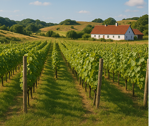
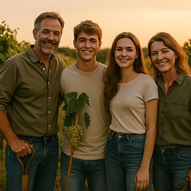

Vingården Havblink blev grundlagt i 2015 på en sydvendt skråning nær Faaborg, hvor havets milde brise og det fynske mikroklima skaber ideelle betingelser for hvidvinsdruen Solaris. Gården er bygget på et tidligere landbrug, som blev nænsomt renoveret og tilpasset vinproduktion i 2017, hvor det første vineri blev opført.
Med 3 hektar vinmarker i dag, dyrkes alle druer økologisk og høstes i hånden. Fra begyndelsen har ambitionen været at skabe dansk hvidvin med både karakter og omtanke – med naturen, kvaliteten og fortællingen i centrum.
Havblink drives af en dedikeret familie med rødder i både natur og håndværk.
Det hele begyndte som en fælles drøm om at skabe noget lokalt og ærligt – og med tid, tålmodighed og kærlighed til jorden blev drømmen til virkelighed.
I dag står forældrene Jørgen og Hanne side om side med deres to unge børn, Kris og Sol i marken, hvor de sammen dyrker, høster og udvikler gårdens vine med stolthed og respekt for både tradition og fremtid.


Hos Havblink Hvidvin er vores mål at sætte dansk, økologisk hvidvin på landkortet som et kvalitetsprodukt, der kan måle sig med de bedste internationale mærker.
Vi udnytter vores unikke sydfynske beliggenhed og dyrker vores Solaris-druer med respekt for både naturen og håndværket.
Med bæredygtighed som kerneværdi og fokus på innovative dyrkningsmetoder, stræber vi efter at skabe vin, der både smager af omhu og vision. For os er vin ikke bare et produkt – det er en passion og en stolthed, der vokser år for år.